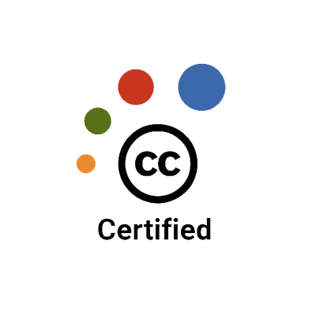

Scott Cormier, MLIS
Sharing information effectively has been an important part of my daily responsibilities at Purdue University Global. I connect students and staff with financial aid information and apply policies and procedures to solve complex problems in a time-sensitive environment. Attention to detail is always important, and my degrees in English and History allow me to communicate effectively with a diverse group of people by helping me adjust the message to suit the needs of the situation.
I have always enjoyed helping students solve their information problems, and now that I have earned my MLIS I look forward to facing new information challenges.
Selected Highlights
- Exceptional academic qualifications, including a Master of Library and Information Science degree from the University of Washington.
- Good Knowledge Management practices: by staying in touch with students, and with employees who serve as primary contact for students, I was able to establish and update documentation on best-practices to enable effective coaching and ensure employee access to relevant reference materials.
- Successful completion of team-level and sitewide projects of increasing levels of difficulty. Orchestrated development and maintenance of a Chat program using Live person software to support students. Edited scripts and materials, procedures and processes while working with project management, the general chat team, and the training team to establish and update documentation to enable effective training and quality assurance. Increased efficiency and improved employee engagement by completing a project to analyze call volume and improve scheduling of breaks and lunches for staff.
- Conducted research in IFAP and other sources to ensure that employees remain compliant in an environment where Congress changes financial aid eligibility regularly, and accountability is part of every decision.
Please contact me through my profile on Linkedin:

Core Competencies
| Leadership and Management | Written and Verbal Communication | Detail Oriented, Organized |
| Strong Customer Service | Project Management | Research and Analysis |
| Creative Thinker | Training and Coaching | Knowledge Management |
| Talent Acquisition | Stakeholder Management | Change Agent |
Education/Training and Other Info of Note:
 |
University of Washington, Seattle WA: 2017 Master of Library and Information Science |
| Louisiana State University, Baton Rouge LA: 1995 Dual Major, BS English Literature and History | |
|  | Creative Commons: 2020 Certification Course for Librarians |
| Library Juice Academy Linked Data Course, and Institutional Repository Management and Outreach Course | |
| ALA: 2022 Fundamentals of Cataloging | |
| Nucamp: 2024 Nucamp Coding Bootcamp, Full Stack Web and Mobile Development | |
| Google Career Certificate: 2024 Data Analytics (in progress) |
- INFX 501 Concepts in Algorithmic Thinking for Information
- INFX 503 Website Design Concepts for Information Professionals
- INFX 551 Fundamentals of Data Curation
- INFX 598 Advanced Data Curation
- INFX 537 Construction of Indexing Languages
- INFX 542 Information Structures using XML
- INFX 595 Capstone Project
- LIS 500 Question of Info
- LIS 570 Research Assessment and Design
- LIS 510 Information Behavior
- LIS 520 Information Resources, Services, and Collections
- LIS 530 Organization of Information and Resources
- LIS 550 Information and Society
- LIS 560 Instructional and Training Strategies for Information Professionals
- LIS 580 Management of Information Organizations
- LIS 522 Collection Development
- LIS 584 Knowledge Management
- LIS 526 Government Publications
GPA 3.79
- INFX 501 Concepts in Algorithmic Thinking for Information Presents programming concepts in the context of information science including the concepts of the algorithm, data storage, expressions, syntax, logic, objects, commands, and events. Introduces the algorithmic manipulation of information objects, and the mindset and methods of computer programming and application development.
- INFX 503 Website Design Concepts for Information Professionals Introduces the context and construction of websites presenting an integrated understanding of web design principles, information behavior, and technical skills. Emphasizes the role of markup in information display and organization, the development of large sites, web strategy, and site construction.
- INFX 551 Fundamentals of Data Curation Examines principles, practices, and trends in the curation of digital research data. Provides a foundation in data management and data services for professional in institutions involved with data intensive research, scholarship, and innovation. Emphasizes data sharing, preservation, open access, metadata, and policy for development of reusable and accessible data resources.
- INFX 598 Special Topics (Advanced Data Curation)This course examines a broad range of practical and conceptual issues in the emerging field of data curation. It focuses on recent advances and challenging problems in the curation of research data across disciplines and new trends in open data resources and services for research communities and the public. The course will draw on current and foundational literature and research, as well as current initiatives, to examine key challenges in the field and and practical solutions applied by data professionals. In-depth study of topics will be driven by student interests and their contributions to the course through discussion, current awareness briefings, and their final project.
- INFX 537 Construction of Indexing Languages Exploration of the design, construction, evaluation, and maintenance of controlled indexing languages, including studies of how users are integrated into the design process. Through completion of thesaurus construction project, prepares students to design index languages, plan and implement a design project, and evaluate indexing languages.
- INFX 542 Information Structures using XML Introduces the concepts and methods used to analyze, store, manage, and present information and navigation. Equal weight given to understanding structures and implementing them. Topics include information analysis and organizational methods as well as XML and metadata concepts and application.
- INFX 595 Capstone 1 Analysis and preliminary design of an approved individual or group research or implementation project demonstrating professional-level knowledge and skills.
- INFX 596 Capstone 2 Implementation of a project demonstrating professional-level knowledge and skills based on a project plan developed in INFX 595.
- LIS 500 Question of Info Provides an overview of the major questions, concepts, and challenges engaging library and information science through seminar discussion. Exploration of the social context in which these questions and challenges occur, and their implications for both research and practice.
- LIS 570 Research Assessment and Design Students recognize research and design opportunities, translate them into researchable frameworks, and conduct research in libraries and other information agencies. Covers problem definition, data collection and analysis, design and validation of alternative solutions, and reporting of results.
- LIS 510 Information Behavior Introduction to the user-centered approach to information behavior. Theoretical foundations of need, creation, seeking, sharing, assessment, management, and use. Synthesis of information behavior studies, performance of information behavior field research, and application of the results of information behavior studies to design information systems, services, and policy.
- LIS 520 Information Resources, Services, and Collections Concepts, processes, and skills related to information, including production, distribution, selection, collection, and services to facilitate access. Specific discussion topics include characteristics of recorded knowledge; organizations and services devoted to managing access to recorded knowledge; and principles associated with development of recorded knowledge and collections.
- LIS 530 Organization of Information and Resources Introduction to issues in organization of information and documents including: analysis of intellectual and physical characteristics of documents; principles and practice in surrogate creation, including standards and selection of metadata elements; theory of classification, including semantic relationships and facet analysis; creation of controlled vocabularies; and display and arrangement.
- LIS 550 Information and Society Covers concepts, processes, and issues related to the larger social context within which the life cycle of information and knowledge in society are investigated. Discussion topics include codes of ethics, professionalization, privacy, freedom of expression, intellectual property, social inequalities, and quality of life.
- LIS 560 Instructional and Training Strategies for Information Professionals Develops knowledge and skills in instruction while applying theories of information literacy, teaching, and learning to instruction in an information environment. Teaches students how to design, develop, and evaluate instructional programs for specific users.
- LIS 580 Management of Information Organizations Introduction to internal and external management issues and practices in information organizations. Internal issues include organizational behavior, organizational theory, personnel, budgeting, planning. External issues include organizational environments, politics, marketing, strategic planning, funding sources.
- LIS 522 Collection Development Access to materials as context for development and management of library collections in academic, public, school libraries. Community analysis, library mission; collection development policies, criteria, levels, responsibilities; aids to selection; collection evaluation, use studies; controversial materials.
- LIS 584 Knowledge Management Introduction to contemporary topics in management of knowledge creation and use in organizations. Discussion topics include knowledge generation, knowledge taxonomy, knowledge transfer, organizational knowledge management practice, and knowledge management systems.
- LIS 526 Government Publications Introduction to government publications of the United States and their acquisition, organization, and use. Other topics covered include the public's right to know, the Federal Depository Library Program, government influences in our daily lives, and future directions in government information.
Links to Projects and More:
JavaScript Projects

Kaplan University, Financial Aid Office:
Training in customer service and sales with steps and with scripts. Additional training classes in time management, stress management, sexual harassment, increasing production, setting goals, etc.
12/9/2013-present Financial Aid Student Service Coordinator, Processing Team:
Updated information in the CampusNexus Student Information System, and other CRM databases. Known as an independent problem solver, I identified ways to increase efficiency and improve quality, then demonstrated speed and accuracy by processing more than fourteen files per hour with nearly 100% QA scores. Collaborated with teammates to meet/exceed goals and increase customer satisfaction.
5/1/2012- 12/9/2013 Manager, Florida:
Planned, organized, monitored, and managed daily processes and operations. Responsible for a team of up to eighteen direct reports in a new financial aid call center focusing on customer service, document collection and one-call resolution. Assisted students, conducted meetings, coached and developed staff, and tracked metrics like quality assurance, call volume, not ready time, and average handle time. Example project: The successful development and maintenance of a Chat service using Liveperson software to support students. Edited scripts and materials while working with project management to establish and update documentation to enable effective training and auditing.
12/14/2009- 5/1/2012 Manager, Chicago:
Managed a team of seven direct reports. Responsible for escalated issues, coaching, holding staff accountable, and reporting on metrics to upper leadership. Also conducted interviews, completed performance reviews, and managed team morale during a conversion from generalized to specialized roles. Solved problems by completing research, sharing information and cooperating with others. Example project: I developed a QA process for agents in the Chicago office and met with them monthly as a group to offer feedback, improve standards and processes, solve problems and execute tasks more effectively, and ensure effective Knowledge Management practices.